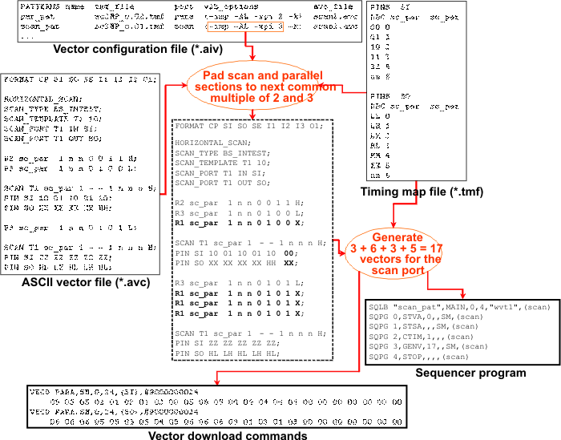
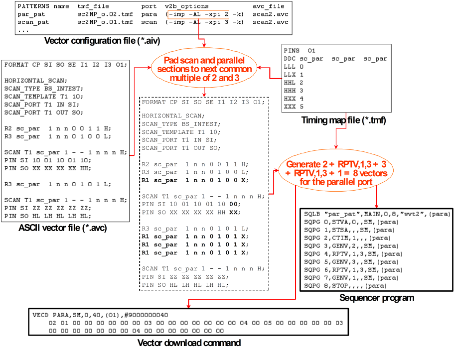

Synchronizing Scan and Parallel Ports with Different X-Mode Factors
When converting an ASCII scan setup into a multi-port setup, you may want to keep corresponding (scan and parallel) sections in the different ports synchronized in the sense that they start simultaneously in all ports. A necessary condition for this is that all ports belong to the same sequencing group (see General Overview of Multi-Port Testing, Synchronization within sequencing groups). But this condition is sufficient only if you specify the same x-mode factor for the scan port pattern and the parallel port pattern. If the x-mode factors for the different patterns are different, the standard vector padding will usually destroy synchronicity.
Assume, for example, the simplest case where only one scan port and one parallel port are present. Assume further that the first parallel section consists of 9 ASCII vectors in the common ASCII vector file, and that the x-mode factor of the scan port is 2, whereas that of the parallel port is 3. Now 9 is divisible by 3, but not by 2. Therefore 1 padding vector is required to reach the next multiple of 2 for the scan port. But this standard padding will lead to a different overall length of the two sections in the two ports (9 ASCII periods for the parallel port, 10 for the scan port), and thus the following scan sections will not start simultaneously in both ports.
In order to keep corresponding sections synchronized in such a situation, both ports must be padded to the next common multiple of both x-mode factors. In the example, 3 ASCII padding vectors would have to be added in both ports.
The ASCII interface provides a refined padding mechanism which achieves exactly this. The mechanism is controlled by the -xpi option of v2b, which activates vector padding before sequencer instructions (including SCAN statements). This option accepts one or more integer parameters which inform v2b of additional x-mode factors that is must take into account when calculating the number of ASCII padding vectors. The x-mode of the pattern to be translated (and padded) does not need to be specified. It is known to v2b from the timing map file.
Note that -xpi has no influence on the padding at the pattern end. Pattern termination in different ports must be synchronized by -xpe with a numerical parameter. Observe also that this type of synchronization is only possible for subroutines (type SVEC or v2b option -s). For details see Synchronizing Subroutine Calls in Different Ports.
The described solution of the synchronization problem can also be applied to more than two ports. The only difference is that the x-mode factors of more than one port must be passed to v2b with the -xpi option.
Vector padding for parallel pins in the scan sections
The RPTV repeat factor and the binary padding vectors after the RPTV loop are calculated as follows:
Let TL be the length of the template, xP the x-mode factor of the parallel port, and xS the x-mode factor of the scan port. Then the template length is corrected to the smallest n such that n is directly divisible by xP*xS and n ≥ TL. Call this corrected template length TL'. Then the repeat factor of the RPTV instruction is TL\xP (integer division).
The number of binary padding vectors that must be appended to the RPTV loop is TL' \ xP - TL \ xP. If the remainder r of TL / xp is > 0, the first padding vector is created from r occurrences of the state character that is specified in the header line of the scan instance, followed by xP - r instances of the padding character. The remaining padding vectors, which are only required for the synchronization, are created from xP occurrences of the padding character.
Examples
Scan port
The processing for the scan port looks as follows:

Observe the following points in this figure:
- Because of SCAN_TYPE BS_INTEST, the padding vectors for pin SI are appended at the end. With SCAN_TYPE STANDARD, they would be inserted at the start.
- The timing map file fragment shows that the x-mode factor for the
scan port is 2. The x-mode factor for the para
port is 3. The x-mode factor of the para port is passed to v2b
along with the scan_pat pattern as an additional parameter of the
-xpi option. In the same way v2b is informed of the x-mode factor of
scan_pat for the translation of the par_pat
pattern.
The two parallel sections are padded to 6 ASCII vectors. The first scan section is expanded to 12 ASCII vectors with one binary padding vector. This is a pure synchronization vector, because 10 is directly divisible by 2. The second scan section, which is located at the end of the pattern, is not padded at all for the same reason.
- In the example, the default characters are used for padding (repeating the last character for drive pins, X for receive pins, see X-Mode ASCII Vector Padding). But you can override this by specifying a padding control file with -xpi (see also The Padding Translation File).
Parallel port
The processing for the parallel port looks as follows:

Observe the following points in this figure:
- The figure exemplifies the processing by pin O1.
- In the example, TL\xP is 3, and TL'\xP-TL\xP is 1, that is, no proper synchronization vectors are needed.
- The
GENV,3instruction in the example after the first RPTV instruction comprises- one binary padding vector for the first scan section (created from
HXX), expanding this section to 12 ASCII periods, - the binary vector created from the parallel section (
LLL), - a synchronization padding vector for the parallel section (created from
XXX), expanding the second parallel section to 6 ASCII periods.
- one binary padding vector for the first scan section (created from
- A binary standard padding vector (created from
HXX) is added at the end of the pattern because 10 is not directly divisible by 3.